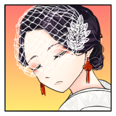
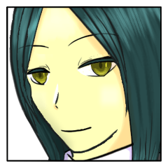
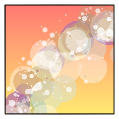

メインフェイズ
GM
これよりメインフェイズに入っていきましょう。
GM
シーン表が用意されています。
使わずとも構いませんが、使うならこちらのみでお願いします。
堅洲の里シーン表(2d6)
2:墓標。儀式『神楽八十神追』で死んでいった隠忍たちを祀るものだ。
3:洞穴。些細な割れ目のような入り口だが、中は広い。完全な闇が滴る。
4:戦場。岩を抉る刃の跡が、これまでの忍たちの戦いの凄まじさを物語る。
5:集落。そのまま里の者の営みが残っており、細々と、しかし平穏な暮らしをしていたことが窺える。
6:木々。鬱蒼と生い茂る。どこまでも奥があり、深い闇へと招く。
7:祭壇。一切の明かりは消えて、人気はない。
8:草原。青く暗い満月が空にあり、風が吹けば草がさざめく。
9:廃墟。以前の儀式で朽ち果てた家屋が残存している。
10:小川。白々と、草木をかきわけるように流れる。
11:湖沼。冷気がわき上がり、熱という生命の灯火を啜る。
12:暗闇。明かりが届かぬ、果ての果て。
GM
それでは、「神楽八十神追」メインフェイズ、第一サイクル。
GM
初手をご希望の方はいらっしゃいますでしょうか？
GM
いない場合は全員1D100で低い目を出した人がとりあえず初手になります。
三榊 琴梨
誰もいらっしゃらなければやってもよろしいですか？
メインフェイズ サイクル１ 三榊 琴梨
GM
先ほどまでたくさんの人がいた祭壇も、いつの間にか４人。
GM
一つの虫の音もなく、明かりと言えば青く暗い満月のみ。
爾甁粢 野葛
照る月明かりの中を溶けるように、
祭壇から異形の白装束が姿を晦ました。
GM
青光りする月光も、今は隠忍の在ったはずの空白を照らすのみ。
葦原 名張
儀式の最中だったはずの祭壇の上に4人。今しがた3人になった。
葦原 名張
慌てる様子もなく周囲をゆっくりと見回すと、顎をなでる。
三榊 琴梨
がらり、と変わる風景。
ぱちり、と目を瞬かせたその瞬間。
『八十神』は消えている。
百々坂 瞠
消えたその姿さえ、目に映っていたかは怪しい。
百々坂 瞠
名の通りに見開かれて月を映し込む瞳は呆然と。
残された二人を、祭壇を、見える景色のすべてを見つめるばかり。

三榊 琴梨
早業に、純粋な感嘆の声。
この場に残された『八千矛』に、さて、どうしたものかと視線を向けたら――
百々坂 瞠
耳慣れた。
だが暫くの間、聞くはずもなかった声だ。
葦原 名張
「あー、俺と、『姫サマ』と、『八十神』がいるのは当然だが……」
GM
当然、このようなことがあったとは記録にない。
百々坂 瞠
問われてようやく、正気を取り戻した風。
居直る表情は引き結ばれて、先までの呆けた色はない。
百々坂 瞠
だがそれに、答える言葉もまた持たない。
三榊 琴梨
「……本当の、本当に、お姉さまですのよね？」
百々坂 瞠
「……そうだ」それになら、答えることができる。
三榊 琴梨
「琴梨はお声を聴いて安心しました。お姉さまですのね」
百々坂 瞠
几帳面に分けられた前髪も、皺が固定される寸前の眉間も、引き結ばれた口元も、琴梨の見慣れた百々坂瞠のものだ。
葦原 名張
「俺がきいてる分には、『お姉サマ』なんてぇ『役』はなかったがな」
三榊 琴梨
「ええ、ええ、『八千矛』様。わたくしもそう伺っております」
三榊 琴梨
本人確認完了、ほっとした表情を見せるが、その問題自体は変わらず横たわっている。
百々坂 瞠
「私もそう聞いていたよ。だから私は、先の質問には聞き返すことしかできない」
GM
一度始まった儀式は、完遂か、破壊か。そのどちらかに至るまで、中止はありえない。
葦原 名張
「『姫サマ』の言うように、真っ先に逃げてった『八十神』が何か知ってるかもしれないが……」
葦原 名張
爾甁粢が消えていった方向から2人へと目線を戻す。
葦原 名張
「『姫サマ』と『お姉サマ』は、姉妹かなんかかい？」
百々坂 瞠
「私はただの護衛だ。そう呼ばれただけのな」
三榊 琴梨
「でも、琴梨は本当のお姉さまのように思っておりますのよ」
葦原 名張
「いいじゃあないか。それぐらい付き合いが長いんだろ？」
百々坂 瞠
相好を崩す様子に、いささか意外そうな顔をする。
葦原 名張
「ああ、ははは。この格好だとそういう顔をするやつが多いのは面白いな」
三榊 琴梨
「それはもう。幼い頃からお姉さまは琴梨を護ってくださいましたし、お稽古もつけていただきました」
三榊 琴梨
「琴梨としては心強いのですけれど……でも、お姉さまは、いれぎゅらぁ、ですのよね？」
百々坂 瞠
「……その反応といい、この事態を「それよりも」で片づけてしまうところといい」
百々坂 瞠
「此度の八千矛は、随分と懐が深いと見える」
三榊 琴梨
そうなのです。
ゆえに、『姫君』は問う。
三榊 琴梨
「それでも、『八千矛』様。儀式はお続けになる。そう思って、よろしくて？」
三榊 琴梨
「差し出がましい確認、失礼致しました」
葦原 名張
「ああ、いいっていいって。確認しておくのは大事なことだ」
三榊 琴梨
「お姉さまの仰る通り、とても落ち着いてらっしゃったので……ええ、慌てろというわけではないのですけれど。不測の事態に動揺しているのは、わたくしの方かもしれませんね」
百々坂 瞠
「しかし、きみだって儀式をしない気などなかったのではないのか。琴梨？」
三榊 琴梨
「琴梨はこの儀式のため、精進して参りましたから」
三榊 琴梨
そう微笑む彼女が身に着けた術の数々は、『姫君』の役目を果たす者として、幼少の頃から授けられたものだ。
三榊 琴梨
あなたが教えた術もまた、彼女の身にしかと在る。
三榊 琴梨
2D6>=5 （判定：骨法術） (2D6>=5) ＞ 3[1,2] ＞ 3 ＞ 失敗
三榊 琴梨
低くてびっくりしちゃった 振り直しなしで……
百々坂 瞠
「ああ」それをずっと、近しく見てきた。疑うところなど何もない。
百々坂 瞠
「今のきみに、私など障害にならない。そうだろう？」
百々坂 瞠
それは内心の決意だ。ならない、ではない。なってはならない。
百々坂 瞠
その微かな揺らぎが繋がるはずだった心を閉ざす。
秀でた比良坂の技は、心に鋭敏に過ぎる。
三榊 琴梨
「ええ、琴梨はちゃんと、分かっております」
三榊 琴梨
不測の事態が起こり、続いている。
それでも儀式は始まっている。
巻き込まれたのがお姉さまであっても――まずは集中しなくては。

百々坂 瞠
満足げに頷いて、姫君から視線を外し。残す八千矛へ向き直る。
百々坂 瞠
「どうか、儀式を。そして、この姫君をよろしく頼んだ。当代の八千矛よ」
葦原 名張
「ああ、ええ。そりゃあもう。任せておいてください」
葦原 名張
そうして2人に向けて、わずかに目を細める。
葦原 名張
「なんてったって、俺は『八千矛』ですからね」
メインフェイズ サイクル１ 爾甁粢 野葛
爾甁粢 野葛
2d6 (2D6) ＞ 12[6,6] ＞ 12
爾甁粢 野葛
――儀式当初の剣呑な空気も、幾分か穏やかに。
儀式に臨む二人と、居るはずのない一人が親交を深めるその最中。
GM
異界の冷たい空気の滞留するような、何もかもを吸い込む闇の中。
爾甁粢 野葛
ふと気づけば『姫君』の周囲からは、気配が消えて。
闇の中にただ一人。
三榊 琴梨
二人の気配を感じない。
これも不測の事態か。
いや、それとも、『八十神』の術中か。
三榊 琴梨
動揺を悟られないよう、口を結ぶ。
開けていても仕方がない目を閉じ、
他の感覚を集中させて、周囲を探る。
爾甁粢 野葛
――静寂に包まれて、
依然1寸先も見通せぬ闇の中。
不意に何者かが、琴梨の腕を掴もうとする。
三榊 琴梨
空気が動く。
それを鋭敏に感じ取り、反射的に、伸ばされた何かに手刀を落とすが――
爾甁粢 野葛
「ぐっ……！」
間髪入れぬ手刀を受けて、苦悶の声が漏れる。
されども退いて行こうとする気配はなく、
両腕が下がった隙を突くように背後へ回り込んで。
爾甁粢 野葛
その腰元に腕を回すや、肩に乗せて持ち上げようと。
儀式の『姫君』を、この場から攫い行こうとする。
三榊 琴梨
聞き慣れない声。
ここに居るのは四人。
であれば、これは間違いなく、
三榊 琴梨
追撃を入れようとした瞬間、身体が浮き上がる。
元から視界も悪く、相手の行動が読めない。
三榊 琴梨
一拍遅れて抱え上げられたと認識した瞬間、できることは背中を叩くくらいだ。
爾甁粢 野葛
「……乱暴は止せ、比良坂の。」
いじましい抵抗を受け、呆れるように声が返る。
三榊 琴梨
「そっくりそのままお返しいたします！」
ポカッポカッ。反抗は止みそうにない。
爾甁粢 野葛
「………気の済むまでやっていろ。」
互いの顔は、尚も見えず。
それでも揺れる体躯の振動から、駆け出す足が勢いを増すのを感じるだろう――
三榊 琴梨
速度が上がり、身体が揺れる。この体勢では力も入りづらいが、それでも抵抗は止めなかった。
爾甁粢 野葛
「………………着けば分かる。」
それだけを答えれば、後は無言のまま。
ただ背中を叩かれる音だけを響かせながら、闇の中を駆けて行く。
爾甁粢 野葛
―やがて、小さな篝火が一つ。
闇の奥底から、沸き上がるように現れて。
爾甁粢 野葛
攫い来た『姫君』を、その場に降ろした。
三榊 琴梨
殴っても、何を言っても梨の礫だ。
連れて行かれることが、何とも歯痒い。
三榊 琴梨
ちらちらと光。
連れ去られた先、篝火の前。
降ろされた途端、当然と言うべくか『八十神』から距離を取る。
爾甁粢 野葛
「……あれだけ暴れて、まだ足りないか。」
三榊 琴梨
たとえば、殺す。
これは分かる。儀式として『姫君』を狙うのは、有り得ない話ではない。
三榊 琴梨
けれど、大した危害を加えられず、どこぞと分からぬ場所に攫われている。
『八十神』の意図が読めない。
警戒と困惑が混ざった、けれど毅然とした表情を『八十神』に向ける。
爾甁粢 野葛
「何の、ということは無い。
謀（はかりごと）は、お前たちの得手だろう。」
爾甁粢 野葛
「…お前を連れて来たのは、話をするためだ。
それが終われば、また元の場所に戻してやろう。」
彼我の距離を詰めようと、ジリと迫る。
三榊 琴梨
一歩詰められたなら一歩、二歩なら二歩。近づけさせまいと、下がる。
爾甁粢 野葛
「内密の話だ。
他の者たちに、聞かれるわけに行かない。」
互いの距離が付かず、離れず。
変わらぬことを悟ったか、一度足を止めて。
爾甁粢 野葛
懐から一枚の紙片を取り出すや、その上に目を走らせて。
再び閉じた紙片を、篝火の上に放って投げた。
爾甁粢 野葛
燃え上がる火が、辺りを一瞬明るく照らし出すや。
不意に男が駆け出し、『姫君』の元へに迫った。
爾甁粢 野葛
2D6>=8 （判定：壊器術） (2D6>=8) ＞ 7[1,6] ＞ 7 ＞ 失敗
三榊 琴梨
言葉も、光景も、『八十神』から気を逸らすには至らない。
三榊 琴梨
今は相手が見える。地に足も着いている。
これ以上、いいようにされて堪るものか！
三榊 琴梨
手本のように綺麗に構え、腰を入れ、拒むように右手を突き出す。
爾甁粢 野葛
「ぐあっ！？」
鋭く突き出した右の拳が、白装束の男の顔面に鋭く突き刺さり。
爾甁粢 野葛
被り物の…触覚の辺りが少し破損したかも知れない。
そんな気配を感じながら、壊器術で感情判定を使用と思います。
爾甁粢 野葛
2D6>=5 （判定：壊器術） (2D6>=5) ＞ 9[3,6] ＞ 9 ＞ 成功
三榊 琴梨
ET 感情表(2) ＞ 友情（プラス）／怒り（マイナス）
爾甁粢 野葛
ET 感情表(3) ＞ 愛情（プラス）／妬み（マイナス）
三榊 琴梨
ドンピシャなの出ちゃった 怒りで。説明不要と思われます。
GM
了解しました。野葛さんはいかがいたしますか？
爾甁粢 野葛
うーんと…じゃあ、妬みましょう…
余りにも真っすぐ過ぎる性根に。
爾甁粢 野葛
拳を受けた弾みで頭部が抜け落ちぬよう手で抑えつつ、
どうにか倒れることだけはせず踏ん張ると、正面を睨んで。
爾甁粢 野葛
「なんなのだ、お前は！？
なぜ言葉を交わす前に拳が出る！」
爾甁粢 野葛
凹んだ部位を手の平でなだらかにしつつ、怒りの声を発する。
どうやら、触手を除いて他の部位に大事は無いようだ。
三榊 琴梨
未だ、『八十神』の顔は見えない。
しかし剣呑な気配を感じることはでき、じっと眦を吊り上げた。
三榊 琴梨
「皆様方のところから、わたくしを拐かしたのはあなた様でしょうに！」
三榊 琴梨
「それに今も！
言葉、会話と仰いますけど、何も仰らずいきなり距離を詰めたのはあなた様です」
三榊 琴梨
「まさか、お忘れではないでしょうけど……わたくしとあなた様は、立場を異にしております」
三榊 琴梨
「わたくしが警戒するのも当然だと思いませんこと？」
三榊 琴梨
『八十神』を真っ直ぐ見据え、一息に言い切って、ふうと息を吐いた。
顔に滲むのは、怒りと疲れ。
爾甁粢 野葛
「……そうする必要があった、というだけの話だ。
俺が正面から尋ねて、果たして素直に話を聞いたか？」
爾甁粢 野葛
「お前の言う通り、俺とお前は全く別の立ち位置にいる。
比良坂どもの待ち構える場に、一人でのこのこ行けば罠に嵌まるだけだ。」
爾甁粢 野葛
「…まずは俺の話を聞け……
お前は俺の問いに…ただ、頷くか首を振るかするだけで良い。」
三榊 琴梨
そこはきっぱり。
続く言葉に納得できないこともないが、彼女の立場として、やはり容認はし難い。
眉間に皺を寄せたまま。
爾甁粢 野葛
「……遅かれ早かれ、だ。
これはいずれ来る決断で……
俺はその時を、僅かに早めただけのことだ。」
爾甁粢 野葛
「お前にとって何が得策か、よく考えろ。」
爾甁粢 野葛
頭に被る布の下で、細く息を吐く音が響く。
爾甁粢 野葛
「…俺のものとなれ、比良坂の娘。
首を縦に振り、従うならば悪いようにはしない。」
爾甁粢 野葛
「この儀式を終えた暁には…
お前は、新たな大国主の妻となるのだ。」
三榊 琴梨
「どちらにしたって、謹んで遠慮させていただきますから」
爾甁粢 野葛
「…今であれば『姫君』のお前だ。
儀式の後であれば、お前の好きにすれば良い。」
爾甁粢 野葛
「俺の策は…十全だ。
儀式において、お前の存在はさしたる問題では無い。
大きく意味を持つのは、その後のことだ。」
爾甁粢 野葛
「本来ならば…こんなやり取りは、必要の無い事だ。
俺はお前の心情を慮っている。分かるか？」
三榊 琴梨
「では、なおさら。あなた様のものになることはできません。
わたくしは『姫君』の責務を果たさなくてはなりませんの」
三榊 琴梨
「ご配慮、感謝いたしますわ。
でも、わたくしのことは、わたくしが決めます」
三榊 琴梨
それ以上交わす言葉は無いと言わんばかりに、きゅっと口を噤んだ。
爾甁粢 野葛
「…機に疎い娘だ。」
布の奥で、溜め息を吐いて。
「俺は告げるべきことは告げた。
今しばらく…お前が向かうべき道を考えてみろ。」
爾甁粢 野葛
「……話は済んだ。もう戻れ。」
ゆらり、踵を返して。
「火矢を飛ばしてやる。
後を追えば、連中の元に戻れるだろう。」
爾甁粢 野葛
鏃に布を巻き付けて、篝火から火を移す。
三榊 琴梨
その背に。
もう一発くらい入れておいた方が良いのでは、と過る。
三榊 琴梨
が、今は『八千矛』たちとの合流が先決だ。
ぐっと握った拳は、そのまま留め置かれた。
爾甁粢 野葛
火矢をつがえながら、弓を引いて。
…それを放つ前に、『姫君』の方を見て。
爾甁粢 野葛
「…最後に、一つ聞いておく。
お前には、何か好む物はあるのか？ 比良坂の娘。」
三榊 琴梨
「すたあばっくすの季節限定ふらぺちいの」
三榊 琴梨
それを答えてどうするのか。
と思ったが、今までのやりとりから回答しないと帰してもらえない気がして、渋々答える。
爾甁粢 野葛
「……奇体な趣向だな。
やはりお前とは…何一つとてソリが合わないようだ。」
爾甁粢 野葛
言葉を返す代わりに、天に火矢が放たれた。

三榊 琴梨
その言葉が届く前に、姿が闇に消える。
爾甁粢 野葛
流星の如く、火矢が中空に軌跡を描いて。
後には、闇に取り残される隠忍が1人。
GM
姫君と呼ばわれる女がひとり。
八十神と呼ばわれる男がひとり。
GM
※背景「不忍」の効果により、野葛の居所が琴梨の手に渡りました。
メインフェイズ サイクル１ 百々坂 瞠
百々坂 瞠
祭壇の上にあった三忍。
そのうち一人の姿が消えたのは、丁度。
百々坂 瞠
この場にいるはずもない女が儀と姫君の行方を頼んで、その当人から視線を外したその時だった。
葦原 名張
2人から視線を外し、戻すとそこには。
果たして、『姫君』の姿はなかった。
百々坂 瞠
ようやく異変を悟ったのは、相対した男の微かなその声でだ。
振り向けばその場で理解するそれを見て取れば、そのまま祭壇へ視線を巡らせ、
葦原 名張
「……こりゃあ、『八十神』の仕業か？」
葦原 名張
僅かに、『お姉さま』と呼ばれていた女へと視線を向ける。
百々坂 瞠
「私がいる以上、もはやこの儀は何が起きようとおかしくないが……
それでも、『姫君』は儀式にとって重要な存在であることに変わりはない。
部外者よりはな」
葦原 名張
「そりゃその通りだ。儀式には『姫サマ』も『八十神』も欠けちゃいけねぇからな」
葦原 名張
「……まぁ、ここに来ちまってる以上、アンタなら欠けていいとも思わんが」
百々坂 瞠
「そのようなことを言われるとは思わなかった」
百々坂 瞠
「私なら真っ先に、欠けるなら適任だと言ったろうにな」
葦原 名張
「そりゃあ、配役されていなくとも儀式に入り込んでる以上はなぁ」
葦原 名張
「『姫サマ』とあんだけ仲良しってんなら、それこそだろ」
百々坂 瞠
「それも昨日までの話だ。
私はこの場に来てまで、あの子を支える気も守る気もなかったさ。
あの子だってそうだろう」
葦原 名張
「おお、なんとも。……シノビのお手本みたいなことを言うんだな。それが、昨日までがアンタの『配役』だったって？」
葦原 名張
挑発するというよりも、本当に感心してるかのような声音。
百々坂 瞠
「儀の始まるあの時をもって、私の役目は終わり。
いずれは次の役を賜ったろう」
葦原 名張
「……だったはず、なんだがなぁ。妙なことになったもんだ」
百々坂 瞠
「それが、あろうことかここにいるのは。
因果とさえ言いようがないが」
葦原 名張
「さて、誰かが最後まで見届けろとでも言ってるのかね」
百々坂 瞠
「現世を望む比良坂の重鎮か。それとも、儀を組んだ遥かなる父祖か。それとも忍神とやらか」
百々坂 瞠
「あり得ない話ではないかもしれないな」
百々坂 瞠
そう語る女は、すっかりと消えた姫君を追うことを忘れているように見える。
否。
百々坂 瞠
語った通りだ。もうそれは、女の役目ではない。
ほんの十数分前ならば迷わず行ったであろうことは。
百々坂 瞠
その頃なら、探すことさえ必要はなかった。
比良坂の呪の糸を辿ればいい。儀の始まりをもって断たれたそれは、もはや用を成さず。
百々坂 瞠
情報判定をしましょう。指定特技は呪術。
百々坂 瞠
2D6>=5 （判定：呪術） (2D6>=5) ＞ 5[2,3] ＞ 5 ＞ 成功
GM
お送りしました。咀嚼が済んだら続けてどうぞ。
葦原 名張
僅かなやりとりから受ける印象に対し、似つかわしくないと感じる声を漏らす女を、じっと見つめる。
百々坂 瞠
「もし何かがそうなりと願うのなら、それが解決するべきだと思わないか？」
百々坂 瞠
「儀の成就されるはずのこの舞台に、役が二人も欠けていることを」
葦原 名張
「いや、それこそ最初に今すぐ追えだの言われるものだと思っていたが……」
百々坂 瞠
「実に真っ当な指摘だ。もう少し条件が違えば実際、そう言っただろうな」
百々坂 瞠
「あの子はあれで気が強い。武も立つ。
醜女衆などそうでなければ務まらないが」
葦原 名張
「今頃攫った『八十神』の方が痛い目見てるだろうってことか」
百々坂 瞠
「貴殿は本当に一を聞いて十を知る男だな。話していて実に快い」
百々坂 瞠
「その通りだ。
この場に至ったあの子はもう、助けられるようななよやかな『姫君』ではない」
葦原 名張
「とはいえ、ならば俺も『八千矛』としての役目を果たさんとなぁ」
メインフェイズ サイクル１ 葦原 名張
葦原 名張
ゆっくりと女を中心に歩き出す。
何かを考えるように顎髭を指先でなぜる。
百々坂 瞠
どこか見当がつかない様子でそのさまを眺める。
葦原 名張
「……いつまでもアンタっていうのもしっくりこねぇからさ。名前か呼び方を教えちゃあくれないか？」
百々坂 瞠
「比良坂機関第九中忍部隊、二番の一。百々坂瞠」
百々坂 瞠
「……改めて名など聞かれたのは、随分と久しぶりだな。
思い至らずに申し訳ない」
葦原 名張
「いやいや、どうも。百々坂サン……。俺の方も名乗っといた方がいいかい？」
葦原 名張
俺の情報はもう持っているだろう？といわんばかりの、わざとらしい確認をする。
百々坂 瞠
「あの儀の観客として招かれるものに、貴殿の名を知らないものがいるとでも？」
葦原 名張
「だよなぁ。そもそもうちの家だって、半分国に管理されてるようなもんだ」
百々坂 瞠
「儀の資料を当たれば、家系図くらいは見られたろうな」
百々坂 瞠
「だが、それよりも。
資料に残らない人柄は、この場でしか知り得ないさ」
葦原 名張
「ふっふっふ。そう褒められちゃあ照れちまうね」
葦原 名張
表面上は自己紹介と当たり障りのない会話をする。
百々坂を中心にゆっくりと進めていた歩みはいつの間にか止められ、『八千矛』の双眸はじっと『観客』を、その向こうを、見ている。
葦原 名張
「……探しに行くなら、まぁきっとこっちの方だな」
葦原 名張
『八十神』が最初に姿を消した方向が、ちょうど百々坂を挟んだその先だ。
百々坂 瞠
揃ってその方向へ視線を向けた。
思いもかけず降り立った祭壇の上で呆けていた眼が見逃した方角。
葦原 名張
「ま、当てもなく探し回るにはちと広い。『姫サマ』も『八十神』も白い格好してんだから……じぃーーっと見てりゃあ、何か見えるかもな」
百々坂 瞠
「……そうだな。図ったように、探し人には良い灯もある」
百々坂 瞠
祭壇の上、天に煌々と輝く満月へちらりと目を向ける。
だが今、探すべき白はそれでない。
GM
あるはずのない月は何も語らず、ただふたつを照らすのみ。
葦原 名張
空に輝く満月によって周囲は明るい。
ましてやシノビにとっては、昼と変わらないといっても過言ではないだろう。
葦原 名張
「本当はこんなモンなかったはずなんだがねぇ」
百々坂 瞠
「『神楽八十神追』は新月の儀。あれもまた部外者だな」
葦原 名張
「ああ、そういう意味じゃあ観客が2人いるってことか」
百々坂 瞠
「今とあっては好都合ではあるが――」思わぬ返答に、そこで一旦言葉を切る。
葦原 名張
「……なぁ、百々坂サン、アンタ本当に何も知らないってのかい？」
葦原 名張
＊情報判定 百々坂 瞠の秘密を調査術で調べます
葦原 名張
2D6>=5 （判定：調査術） (2D6>=5) ＞ 3[1,2] ＞ 3 ＞ 失敗
百々坂 瞠
「何かを知っていたとして、貴殿に知らされない道理があるか？ 八千矛殿」
百々坂 瞠
「この儀について最も知っておくべきは、そして知らされるのは貴殿のはずだ。私よりもよほど」
葦原 名張
ざり、と指先で髭をなぜる。
肯定とも否定とも言えない曖昧な返事。
葦原 名張
俺が知らされない道理、俺が知らない道理。
ないわけではない。
それはただの、曖昧で感覚的なものに過ぎないが。
葦原 名張
それはこの状況がすでに”そう”だと言っているようなものじゃないのか？
葦原 名張
誰かの、何かの、意図が介入しているならば。
葦原 名張
「………いや、そうだな。百々坂サンの言うとおりだろうよ」
葦原 名張
思考を切り上げて百々坂の言葉を肯定する。
百々坂 瞠
本当に物分かりの良い男だ――と断ずるには、先の沈黙は、思案は、いささか長い。